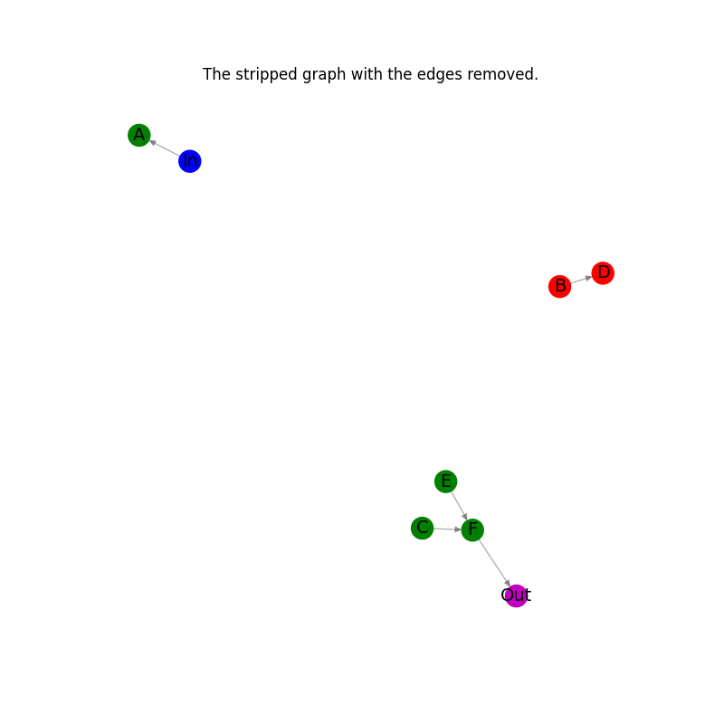
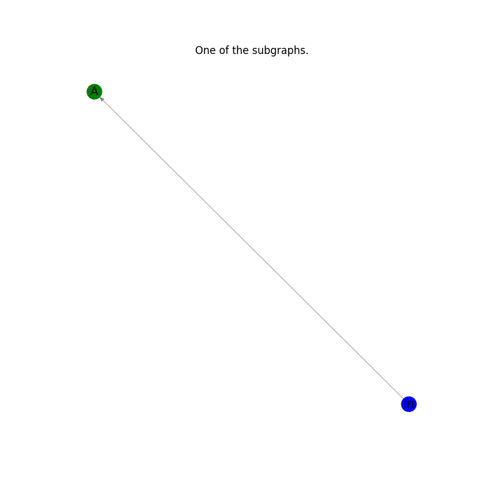
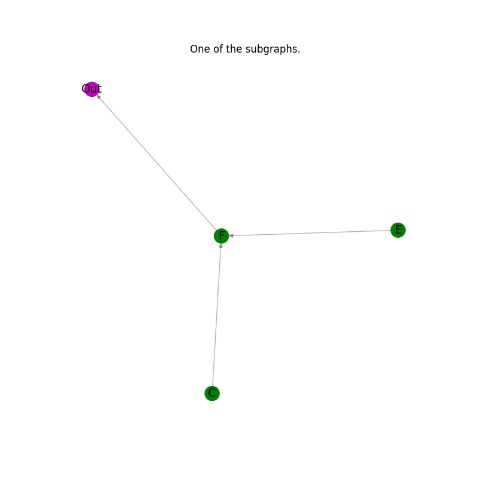
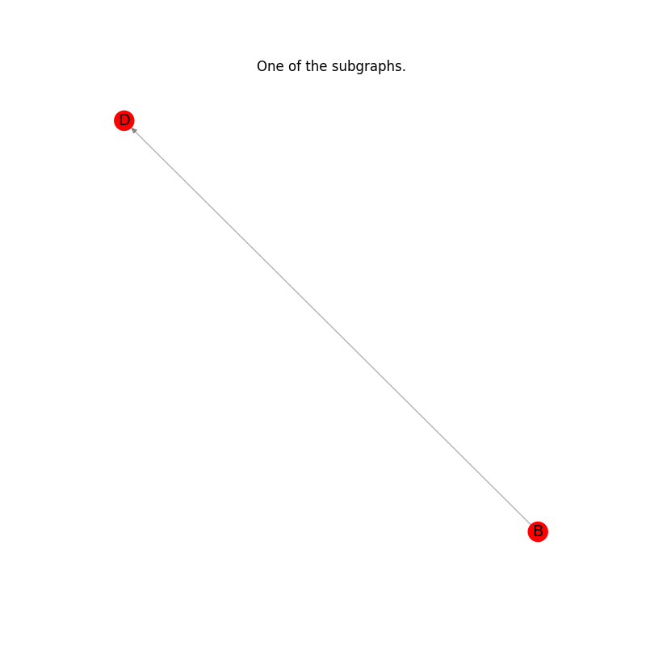

Note
Go to the end to download the full example code.
Subgraphs#
Example of partitioning a directed graph with nodes labeled as supported and unsupported nodes into a list of subgraphs that contain only entirely supported or entirely unsupported nodes. Adopted from lobpcg/python_examples
import networkx as nx
import matplotlib.pyplot as plt
def graph_partitioning(G, plotting=True):
"""Partition a directed graph into a list of subgraphs that contain
only entirely supported or entirely unsupported nodes.
"""
# Categorize nodes by their node_type attribute
supported_nodes = {n for n, d in G.nodes(data="node_type") if d == "supported"}
unsupported_nodes = {n for n, d in G.nodes(data="node_type") if d == "unsupported"}
# Make a copy of the graph.
H = G.copy()
# Remove all edges connecting supported and unsupported nodes.
H.remove_edges_from(
(n, nbr, d)
for n, nbrs in G.adj.items()
if n in supported_nodes
for nbr, d in nbrs.items()
if nbr in unsupported_nodes
)
H.remove_edges_from(
(n, nbr, d)
for n, nbrs in G.adj.items()
if n in unsupported_nodes
for nbr, d in nbrs.items()
if nbr in supported_nodes
)
# Collect all removed edges for reconstruction.
G_minus_H = nx.DiGraph()
G_minus_H.add_edges_from(set(G.edges) - set(H.edges))
if plotting:
# Plot the stripped graph with the edges removed.
_node_colors = [c for _, c in H.nodes(data="node_color")]
_pos = nx.spring_layout(H)
plt.figure(figsize=(8, 8))
nx.draw_networkx_edges(H, _pos, alpha=0.3, edge_color="k")
nx.draw_networkx_nodes(H, _pos, node_color=_node_colors)
nx.draw_networkx_labels(H, _pos, font_size=14)
plt.axis("off")
plt.title("The stripped graph with the edges removed.")
plt.show()
# Plot the edges removed.
_pos = nx.spring_layout(G_minus_H)
plt.figure(figsize=(8, 8))
ncl = [G.nodes[n]["node_color"] for n in G_minus_H.nodes]
nx.draw_networkx_edges(G_minus_H, _pos, alpha=0.3, edge_color="k")
nx.draw_networkx_nodes(G_minus_H, _pos, node_color=ncl)
nx.draw_networkx_labels(G_minus_H, _pos, font_size=14)
plt.axis("off")
plt.title("The removed edges.")
plt.show()
# Find the connected components in the stripped undirected graph.
# And use the sets, specifying the components, to partition
# the original directed graph into a list of directed subgraphs
# that contain only entirely supported or entirely unsupported nodes.
subgraphs = [
H.subgraph(c).copy() for c in nx.connected_components(H.to_undirected())
]
return subgraphs, G_minus_H
Create an example directed graph.#
This directed graph has one input node labeled in and plotted in blue color
and one output node labeled out and plotted in magenta color.
The other six nodes are classified as four supported plotted in green color
and two unsupported plotted in red color. The goal is computing a list
of subgraphs that contain only entirely supported or unsupported nodes.
G_ex = nx.DiGraph()
G_ex.add_nodes_from(["In"], node_type="input", node_color="b")
G_ex.add_nodes_from(["A", "C", "E", "F"], node_type="supported", node_color="g")
G_ex.add_nodes_from(["B", "D"], node_type="unsupported", node_color="r")
G_ex.add_nodes_from(["Out"], node_type="output", node_color="m")
G_ex.add_edges_from(
[
("In", "A"),
("A", "B"),
("B", "C"),
("B", "D"),
("D", "E"),
("C", "F"),
("E", "F"),
("F", "Out"),
]
)
Plot the original graph.#
node_color_list = [nc for _, nc in G_ex.nodes(data="node_color")]
pos = nx.spectral_layout(G_ex)
plt.figure(figsize=(8, 8))
nx.draw_networkx_edges(G_ex, pos, alpha=0.3, edge_color="k")
nx.draw_networkx_nodes(G_ex, pos, alpha=0.8, node_color=node_color_list)
nx.draw_networkx_labels(G_ex, pos, font_size=14)
plt.axis("off")
plt.title("The original graph.")
plt.show()
Calculate the subgraphs with plotting all results of intermediate steps.#
subgraphs_of_G_ex, removed_edges = graph_partitioning(G_ex, plotting=True)
- 
Plot the results: every subgraph in the list.#
for subgraph in subgraphs_of_G_ex:
_pos = nx.spring_layout(subgraph)
plt.figure(figsize=(8, 8))
nx.draw_networkx_edges(subgraph, _pos, alpha=0.3, edge_color="k")
node_color_list_c = [nc for _, nc in subgraph.nodes(data="node_color")]
nx.draw_networkx_nodes(subgraph, _pos, node_color=node_color_list_c)
nx.draw_networkx_labels(subgraph, _pos, font_size=14)
plt.axis("off")
plt.title("One of the subgraphs.")
plt.show()
- 
- 
- 
Put the graph back from the list of subgraphs#
G_ex_r = nx.DiGraph()
# Composing all subgraphs.
for subgraph in subgraphs_of_G_ex:
G_ex_r = nx.compose(G_ex_r, subgraph)
# Adding the previously stored edges.
G_ex_r.add_edges_from(removed_edges.edges())
Check that the original graph and the reconstructed graphs are isomorphic.#
assert nx.is_isomorphic(G_ex, G_ex_r)
Plot the reconstructed graph.#
node_color_list = [nc for _, nc in G_ex_r.nodes(data="node_color")]
pos = nx.spectral_layout(G_ex_r)
plt.figure(figsize=(8, 8))
nx.draw_networkx_edges(G_ex_r, pos, alpha=0.3, edge_color="k")
nx.draw_networkx_nodes(G_ex_r, pos, alpha=0.8, node_color=node_color_list)
nx.draw_networkx_labels(G_ex_r, pos, font_size=14)
plt.axis("off")
plt.title("The reconstructed graph.")
plt.show()
Total running time of the script: (0 minutes 0.702 seconds)